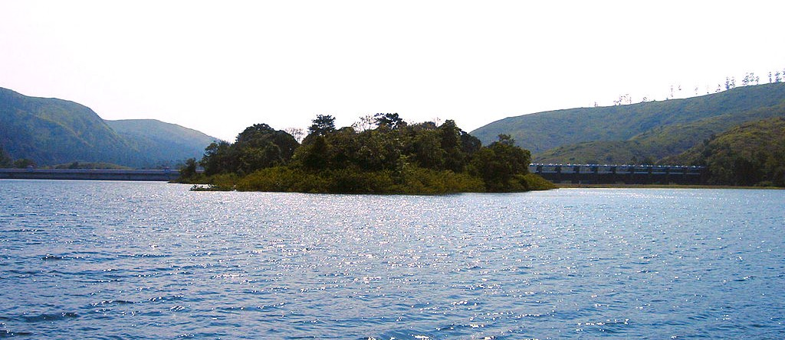

The Mullaperiyar Dam
History

The unique idea of harnessing the westward flowing water of the Periyar river and diverting it to the eastward flowing Vaigai river was first explored in 1789 by Pradani Muthirulappa Pillai, a minister of the Ramnad king Muthuramalinga Sethupathy, who gave it up as he found it to be expensive. The location of the dam had first been scouted by Captain J. L. Caldwell, Madras Engineers (abbreviated as M.E.) in 1808 to reconnoitre the feasibility of providing water from the Periyar river to Madurai by a tunnel through the mountains. Caldwell discovered that the excavation needed would be in excess of 100 feet in depth and the project was abandoned with the comment in his report as "decidedly chimerical and unworthy of any further regard".
The first attempt at damming the Periyaar with an earthen dam in 1850 was given up due to demands for higher wages by the labour citing unhealthy living conditions.The proposal was resubmitted a number of times and in 1862, Captain J. G. Ryves, M.E., carried out a study and submitted proposals in 1867 for another earthwork dam, 62 feet high. The matter was debated by the Madras Government and the matter further delayed by the terrible famine of 1876-77. Finally, in 1882, the construction of the dam was approved and Major John Pennycuick, M.E., placed in charge to prepare a revised project and estimate which was approved in 1884 by his superiors.